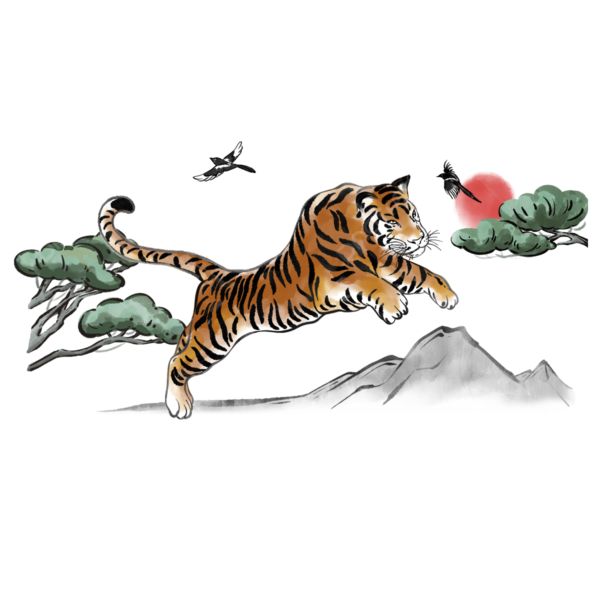

Parbat Tiger
Parbat tigers stalk the dense jungles nestled throughout the Parbat mountains, east of Kashar. They leads solitary lives, meeting only to breed. While they rarely hunt humans, prefering other prey, mother parbat tigers can be ferocious when they perceive their young to be in danger. They are few in number, difficult to track and dangerous to fight, but their pelts are highly prized, particularly by aristocrats in Drace.

Statblock (5e)
Parbat tiger
Armor Class 13
Hit Points 22 (3d10 + 6)
Speed 40 ft.
Proficiency Bonus +2
Skills Perception +3, Stealth +7
Senses Darkvision
| STR | CON | DEX | INT | WIS | CHR |
|---|---|---|---|---|---|
| +3 | +2 | +3 | -4 | +1 | -1 |
| 17 | 14 | 16 | 3 | 12 | 8 |
Multiattack. The tiger makes one Pounce attack and uses Prowl.
Keen Smell. The tiger has advantage on Wisdom (Perception) checks that rely on smell.
Pounce. The tiger moves 20 feet straight toward a creature and then hits it with a claw attack. That target must succeed on a DC 14 Strength saving throw or be knocked prone. If the target is prone, the tiger can make one bite attack against it as a bonus action.
Bite. Melee Weapon Attack: +5 to hit, reach 5 ft., one target. Hit: 10 (1d10 + 3) piercing damage.
Claw. Melee Weapon Attack: +5 to hit, reach 5 ft., one target. Hit: 12 (2d6 + 3) slashing damage.
Prowl. The tiger moves up to half its Speed without provoking Opportunity Attacks. At the end of this movement, the tiger can take the Hide action.